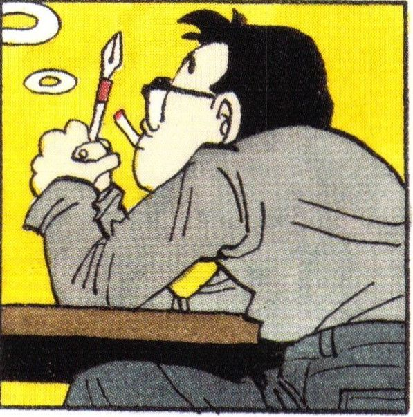

THE PROCESS.

11/12/2024:
New start.
Today starts the marking of the documentation of my physical and spiritual journey.
After a 3 week hiatus from the gym due to a injury to my hand i hit a heavy back and bis;
despite the break from exersise i didnt lose significant strength unike last time, although,
that was almost double in time and my diet took a turn for the worse.
im starting to feel like my old body again.
My current goal is to improve my cardio system to where running is significantly easier than it is now,
as well as improving strength, consistency and calithestics. I aim to achive to do at least one muscle up
in the coming months along with improving my pullups and tricep dips.
i have a good feeling about the future - ODB.